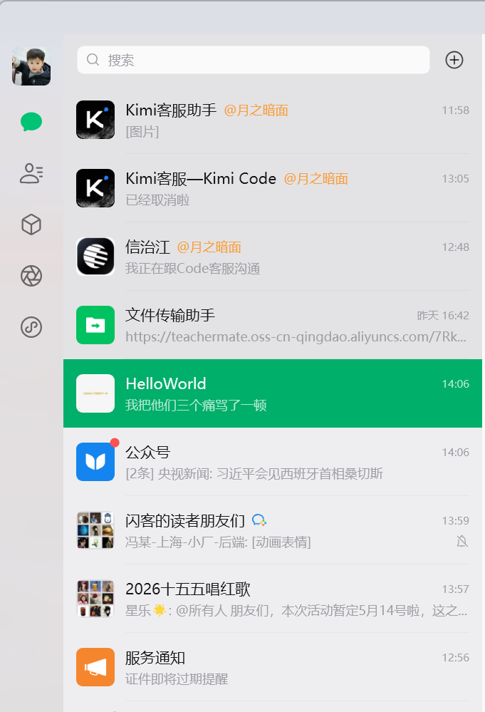

Journal · 2026-04-14
微信聊天记录
吉姆哈克 : 好的，我准备好了 2026年4月14日 09:57 吉姆哈克 : 那两个还是售罄了 2026年4月14日 10:00 吉姆哈克 : 是那个推荐购买的吗？ 2026年4月14日 10:01 吉姆哈克 : [图片] 2026年4月14日 10:01 吉姆哈克 : 我看错了我靠，刚才那倒计时抢购，抢的是上面的39.9 2026年4月14日 10:03 吉姆哈克 : 下面200块的，还是没有 2026年4月14日 10:03 吉姆哈克 : 这不会是每日零点更新吧？ 引用：[图片] 2026年4月14日 10:04 吉姆哈克 : [图片] 2026年4月14日 10:16 吉姆哈克 : 现在只有token plan，可以买了 2026年4月14日 10:16 龙悦科技小马哥 : [捂脸] 2026年4月14日 10:17
吉姆哈克 : Alright, I'm ready 2026年4月14日 09:57 吉姆哈克 : Those two are still sold out 2026年4月14日 10:00 吉姆哈克 : Is it the recommended-purchase one? 2026年4月14日 10:01 吉姆哈克 : [图片] 2026年4月14日 10:01 吉姆哈克 : Damn, I misread — that countdown flash sale just now was for the 39.9 one up top 2026年4月14日 10:03 吉姆哈克 : The 200-yuan one below is still unavailable 2026年4月14日 10:03 吉姆哈克 : Don't tell me it restocks every day at midnight? Quote: [图片] 2026年4月14日 10:04 吉姆哈克 : [图片] 2026年4月14日 10:16 吉姆哈克 : Right now only the token plan is available to buy 2026年4月14日 10:16 龙悦科技小马哥 : [捂脸] 2026年4月14日 10:17
吉姆哈克 : Bon, je suis prêt 2026年4月14日 09:57 吉姆哈克 : Ces deux-là sont quand même en rupture 2026年4月14日 10:00 吉姆哈克 : C'est celui en achat recommandé ? 2026年4月14日 10:01 吉姆哈克 : [图片] 2026年4月14日 10:01 吉姆哈克 : Putain, j'ai mal lu, cet achat au compte à rebours à l'instant, c'était celui à 39,9 en haut 2026年4月14日 10:03 吉姆哈克 : Celui à 200 yuans en bas n'est toujours pas là 2026年4月14日 10:03 吉姆哈克 : Ce ne serait pas une mise à jour quotidienne à minuit ? Citation : [图片] 2026年4月14日 10:04 吉姆哈克 : [图片] 2026年4月14日 10:16 吉姆哈克 : Pour l'instant il n'y a que le token plan d'achetable 2026年4月14日 10:16 龙悦科技小马哥 : [捂脸] 2026年4月14日 10:17
吉姆哈克 : Okay, ich bin bereit 2026年4月14日 09:57 吉姆哈克 : Die beiden sind trotzdem ausverkauft 2026年4月14日 10:00 吉姆哈克 : Ist das das zum Kauf empfohlene? 2026年4月14日 10:01 吉姆哈克 : [图片] 2026年4月14日 10:01 吉姆哈克 : Mist, ich hab mich verlesen — dieser Countdown-Blitzkauf eben war für das 39,9er oben 2026年4月14日 10:03 吉姆哈克 : Das 200-Yuan-Stück unten gibt es immer noch nicht 2026年4月14日 10:03 吉姆哈克 : Das wird doch nicht täglich um Mitternacht aktualisiert? Zitat: [图片] 2026年4月14日 10:04 吉姆哈克 : [图片] 2026年4月14日 10:16 吉姆哈克 : Im Moment ist nur der Token-Plan kaufbar 2026年4月14日 10:16 龙悦科技小马哥 : [捂脸] 2026年4月14日 10:17
吉姆哈克 : 我现在只想让我的龙虾快快跑 2026年4月14日 10:21 龙悦科技小马哥 : 那你就买买买吧 2026年4月14日 10:21 吉姆哈克 : 我害怕又遇到了Kimi家的二货那样的玩意儿 2026年4月14日 10:21 吉姆哈克 : [图片] 2026年4月14日 10:22 吉姆哈克 : 客服现在都不理我呢 2026年4月14日 10:22 吉姆哈克 : 百度家的Pro，真的靠谱吗？ 引用：那你就买买买吧 2026年4月14日 10:23 吉姆哈克 : [图片] 2026年4月14日 10:23 吉姆哈克 : 我打算买299的了 2026年4月14日 10:24 龙悦科技小马哥 : 你买个100的就够了 小伙 2026年4月14日 10:25 龙悦科技小马哥 : 一个亿的token 2026年4月14日 10:25 吉姆哈克 : 那个只能执行200轮问答 2026年4月14日 10:26
吉姆哈克 : Right now I just want my lobster to run fast 2026年4月14日 10:21 龙悦科技小马哥 : Then just buy, buy, buy 2026年4月14日 10:21 吉姆哈克 : I'm afraid of running into another dimwit like the one from Kimi's lot 2026年4月14日 10:21 吉姆哈克 : [图片] 2026年4月14日 10:22 吉姆哈克 : Customer service won't even answer me now 2026年4月14日 10:22 吉姆哈克 : Is Baidu's Pro actually reliable? Quote: Then just buy, buy, buy 2026年4月14日 10:23 吉姆哈克 : [图片] 2026年4月14日 10:23 吉姆哈克 : I'm going to buy the 299 one 2026年4月14日 10:24 龙悦科技小马哥 : A 100 one's all you need, kid 2026年4月14日 10:25 龙悦科技小马哥 : A hundred million tokens 2026年4月14日 10:25 吉姆哈克 : That one only runs 200 rounds of Q&A 2026年4月14日 10:26
吉姆哈克 : Là je veux juste que mon homard file vite 2026年4月14日 10:21 龙悦科技小马哥 : Alors achète, achète, achète 2026年4月14日 10:21 吉姆哈克 : J'ai peur de retomber sur un imbécile comme celui de chez Kimi 2026年4月14日 10:21 吉姆哈克 : [图片] 2026年4月14日 10:22 吉姆哈克 : Le service client ne me répond même plus là 2026年4月14日 10:22 吉姆哈克 : Le Pro de chez Baidu, il est vraiment fiable ? Citation : Alors achète, achète, achète 2026年4月14日 10:23 吉姆哈克 : [图片] 2026年4月14日 10:23 吉姆哈克 : Je vais prendre celui à 299 2026年4月14日 10:24 龙悦科技小马哥 : Un à 100 te suffit, petit 2026年4月14日 10:25 龙悦科技小马哥 : Cent millions de tokens 2026年4月14日 10:25 吉姆哈克 : Celui-là ne fait que 200 tours de questions-réponses 2026年4月14日 10:26
吉姆哈克 : Im Moment will ich nur, dass mein Hummer schnell rennt 2026年4月14日 10:21 龙悦科技小马哥 : Dann kauf, kauf, kauf eben 2026年4月14日 10:21 吉姆哈克 : Ich hab Angst, wieder so einen Hohlkopf wie bei Kimi zu erwischen 2026年4月14日 10:21 吉姆哈克 : [图片] 2026年4月14日 10:22 吉姆哈克 : Der Kundendienst antwortet mir jetzt nicht einmal 2026年4月14日 10:22 吉姆哈克 : Ist das Pro von Baidu wirklich verlässlich? Zitat: Dann kauf, kauf, kauf eben 2026年4月14日 10:23 吉姆哈克 : [图片] 2026年4月14日 10:23 吉姆哈克 : Ich nehme jetzt das für 299 2026年4月14日 10:24 龙悦科技小马哥 : Eins für 100 reicht dir, Junge 2026年4月14日 10:25 龙悦科技小马哥 : Hundert Millionen Tokens 2026年4月14日 10:25 吉姆哈克 : Das schafft nur 200 Frage-Antwort-Runden 2026年4月14日 10:26
吉姆哈克 : 支付宝里面的订单付款吗？ 2026年4月14日 11:07 龙悦科技小马哥 : 是的 2026年4月14日 11:08 吉姆哈克 : 公众号的客服加我了 引用：关注公众号 找客户 2026年4月14日 14:06 吉姆哈克 : 我把他们三个痛骂了一顿 2026年4月14日 14:06
吉姆哈克 : Pay for the order inside Alipay? 2026年4月14日 11:07 龙悦科技小马哥 : Yep 2026年4月14日 11:08 吉姆哈克 : The official-account CS added me Quote: Follow the official account to find customer service 2026年4月14日 14:06 吉姆哈克 : I gave all three of them a ferocious tongue-lashing 2026年4月14日 14:06
吉姆哈克 : Je paie la commande dans Alipay ? 2026年4月14日 11:07 龙悦科技小马哥 : Oui 2026年4月14日 11:08 吉姆哈克 : Le service client du compte officiel m'a ajouté Citation : Suivre le compte officiel pour trouver le service client 2026年4月14日 14:06 吉姆哈克 : J'ai passé un savon à tous les trois 2026年4月14日 14:06
吉姆哈克 : Die Bestellung in Alipay bezahlen? 2026年4月14日 11:07 龙悦科技小马哥 : Genau 2026年4月14日 11:08 吉姆哈克 : Der Kundendienst des offiziellen Accounts hat mich hinzugefügt Zitat: Offiziellen Account folgen, um den Kundendienst zu finden 2026年4月14日 14:06 吉姆哈克 : Ich hab allen drei kräftig die Meinung gegeigt 2026年4月14日 14:06

吉姆哈克 : 置顶的这三个贝塔 2026年4月14日 14:07 吉姆哈克 : 一开始还不情愿退款呢 2026年4月14日 14:07 吉姆哈克 : [图片] 2026年4月14日 14:08 吉姆哈克 : [图片] 2026年4月14日 14:09 吉姆哈克 : [图片] 2026年4月14日 14:10 吉姆哈克 : [图片] 2026年4月14日 14:10 吉姆哈克 : [图片] 2026年4月14日 14:11 吉姆哈克 : [图片] 2026年4月14日 14:12 吉姆哈克 : [图片] 2026年4月14日 14:12 吉姆哈克 : [图片] 2026年4月14日 14:13 吉姆哈克 : Kimi开放平台和Code平台 2026年4月14日 14:16 吉姆哈克 : 都同意退款了 2026年4月14日 14:16 吉姆哈克 : [图片] 2026年4月14日 14:20
吉姆哈克 : These three beta losers pinned at the top 2026年4月14日 14:07 吉姆哈克 : At first they were unwilling to refund 2026年4月14日 14:07 吉姆哈克 : [图片] 2026年4月14日 14:08 吉姆哈克 : [图片] 2026年4月14日 14:09 吉姆哈克 : [图片] 2026年4月14日 14:10 吉姆哈克 : [图片] 2026年4月14日 14:10 吉姆哈克 : [图片] 2026年4月14日 14:11 吉姆哈克 : [图片] 2026年4月14日 14:12 吉姆哈克 : [图片] 2026年4月14日 14:12 吉姆哈克 : [图片] 2026年4月14日 14:13 吉姆哈克 : Kimi's open platform and the Code platform 2026年4月14日 14:16 吉姆哈克 : Both agreed to refund 2026年4月14日 14:16 吉姆哈克 : [图片] 2026年4月14日 14:20
吉姆哈克 : Ces trois betas épinglés en haut 2026年4月14日 14:07 吉姆哈克 : Au début ils ne voulaient pas me rembourser 2026年4月14日 14:07 吉姆哈克 : [图片] 2026年4月14日 14:08 吉姆哈克 : [图片] 2026年4月14日 14:09 吉姆哈克 : [图片] 2026年4月14日 14:10 吉姆哈克 : [图片] 2026年4月14日 14:10 吉姆哈克 : [图片] 2026年4月14日 14:11 吉姆哈克 : [图片] 2026年4月14日 14:12 吉姆哈克 : [图片] 2026年4月14日 14:12 吉姆哈克 : [图片] 2026年4月14日 14:13 吉姆哈克 : La plateforme ouverte de Kimi et la plateforme Code 2026年4月14日 14:16 吉姆哈克 : Toutes les deux ont accepté le remboursement 2026年4月14日 14:16 吉姆哈克 : [图片] 2026年4月14日 14:20
吉姆哈克 : Diese drei Beta-Nullen, die oben angepinnt sind 2026年4月14日 14:07 吉姆哈克 : Am Anfang wollten sie nicht erstatten 2026年4月14日 14:07 吉姆哈克 : [图片] 2026年4月14日 14:08 吉姆哈克 : [图片] 2026年4月14日 14:09 吉姆哈克 : [图片] 2026年4月14日 14:10 吉姆哈克 : [图片] 2026年4月14日 14:10 吉姆哈克 : [图片] 2026年4月14日 14:11 吉姆哈克 : [图片] 2026年4月14日 14:12 吉姆哈克 : [图片] 2026年4月14日 14:12 吉姆哈克 : [图片] 2026年4月14日 14:13 吉姆哈克 : Die offene Plattform von Kimi und die Code-Plattform 2026年4月14日 14:16 吉姆哈克 : Beide haben der Erstattung zugestimmt 2026年4月14日 14:16 吉姆哈克 : [图片] 2026年4月14日 14:20
吉姆哈克 : 而不是其他的小鸡拜模型？ 2026年4月14日 18:39 龙悦科技小马哥 : 模型我都用过了 2026年4月14日 18:47 吉姆哈克 : 所以，你是先有毛爷爷，再积攒了经验值？ 2026年4月14日 18:48 吉姆哈克 : 好吧好吧，我想应该是这样子的 2026年4月14日 18:49 吉姆哈克 : [图片] 2026年4月14日 18:50 吉姆哈克 : [图片] 2026年4月14日 18:50 吉姆哈克 : [图片] 2026年4月14日 18:50 吉姆哈克 : [图片] 2026年4月14日 18:50 吉姆哈克 : [图片] 2026年4月14日 18:50 吉姆哈克 : 我们学校，又要举办一个傻逼讲座。我感觉老师们，都很少有人用过纯血OpenClaw 引用：****** ****** 2026年4月14日 18:51 吉姆哈克 : [表情] 2026年4月14日 18:51 吉姆哈克 : 我是先有视频教程，再准备毛爷爷，再积攒经验值，最后要求赚我毛爷爷的人退款[发抖][发抖][发抖] 引用：所以，你是先有毛爷爷，再积攒了经验值？ 2026年4月14日 18:53 吉姆哈克 : 当然，当初的君子协议，不在我的退款考虑范围[笑脸][笑脸][笑脸] 2026年4月14日 18:53
吉姆哈克 : Rather than some other rinky-dink little models? 2026年4月14日 18:39 龙悦科技小马哥 : I've tried all the models 2026年4月14日 18:47 吉姆哈克 : So you first had the Chairman Mao bills, then racked up the XP? 2026年4月14日 18:48 吉姆哈克 : Alright alright, I guess that's how it goes 2026年4月14日 18:49 吉姆哈克 : [图片] 2026年4月14日 18:50 吉姆哈克 : [图片] 2026年4月14日 18:50 吉姆哈克 : [图片] 2026年4月14日 18:50 吉姆哈克 : [图片] 2026年4月14日 18:50 吉姆哈克 : [图片] 2026年4月14日 18:50 吉姆哈克 : Our school's putting on another idiotic lecture. I get the feeling barely any of the teachers have ever used pure-blooded OpenClaw Quote: ****** ****** 2026年4月14日 18:51 吉姆哈克 : [表情] 2026年4月14日 18:51 吉姆哈克 : I first got the video tutorials, then set aside Chairman Mao bills, then racked up XP, and finally demanded a refund from whoever earned my Mao bills [发抖][发抖][发抖] Quote: So you first had the Chairman Mao bills, then racked up the XP? 2026年4月14日 18:53 吉姆哈克 : Of course, the original gentleman's agreement isn't part of my refund math [笑脸][笑脸][笑脸] 2026年4月14日 18:53
吉姆哈克 : Plutôt que d'autres modèles de pacotille ? 2026年4月14日 18:39 龙悦科技小马哥 : J'ai essayé tous les modèles 2026年4月14日 18:47 吉姆哈克 : Donc toi tu as d'abord eu les billets de Mao, puis accumulé les points d'expérience ? 2026年4月14日 18:48 吉姆哈克 : Bon bon, j'imagine que c'est comme ça 2026年4月14日 18:49 吉姆哈克 : [图片] 2026年4月14日 18:50 吉姆哈克 : [图片] 2026年4月14日 18:50 吉姆哈克 : [图片] 2026年4月14日 18:50 吉姆哈克 : [图片] 2026年4月14日 18:50 吉姆哈克 : [图片] 2026年4月14日 18:50 吉姆哈克 : Ma fac organise encore une conférence à la con. J'ai l'impression que quasiment aucun prof n'a utilisé l'OpenClaw de pure souche Citation : ****** ****** 2026年4月14日 18:51 吉姆哈克 : [表情] 2026年4月14日 18:51 吉姆哈克 : Moi j'ai d'abord eu les tutoriels vidéo, puis préparé les billets de Mao, puis accumulé l'XP, et enfin exigé le remboursement à qui m'avait pris mes billets [发抖][发抖][发抖] Citation : Donc toi tu as d'abord eu les billets de Mao, puis accumulé les points d'expérience ? 2026年4月14日 18:53 吉姆哈克 : Bien sûr, l'accord à l'amiable de départ n'entre pas dans mes calculs de remboursement [笑脸][笑脸][笑脸] 2026年4月14日 18:53
吉姆哈克 : Und nicht irgendein dahergelaufenes Winzmodell? 2026年4月14日 18:39 龙悦科技小马哥 : Ich hab alle Modelle durchprobiert 2026年4月14日 18:47 吉姆哈克 : Also hattest du zuerst die Mao-Scheine und dann Erfahrungspunkte gesammelt? 2026年4月14日 18:48 吉姆哈克 : Na gut, ich nehme an, so läuft das 2026年4月14日 18:49 吉姆哈克 : [图片] 2026年4月14日 18:50 吉姆哈克 : [图片] 2026年4月14日 18:50 吉姆哈克 : [图片] 2026年4月14日 18:50 吉姆哈克 : [图片] 2026年4月14日 18:50 吉姆哈克 : [图片] 2026年4月14日 18:50 吉姆哈克 : Unsere Uni veranstaltet wieder einen bescheuerten Vortrag. Ich hab das Gefühl, kaum einer der Dozenten hat je das reinblütige OpenClaw benutzt Zitat: ****** ****** 2026年4月14日 18:51 吉姆哈克 : [表情] 2026年4月14日 18:51 吉姆哈克 : Ich hatte zuerst die Video-Tutorials, dann die Mao-Scheine zurückgelegt, dann Erfahrungspunkte gesammelt und am Ende von dem, der meine Mao-Scheine verdient hatte, die Erstattung verlangt [发抖][发抖][发抖] Zitat: Also hattest du zuerst die Mao-Scheine und dann Erfahrungspunkte gesammelt? 2026年4月14日 18:53 吉姆哈克 : Natürlich, die ursprüngliche Gentleman-Vereinbarung fällt nicht unter meine Erstattungsüberlegungen [笑脸][笑脸][笑脸] 2026年4月14日 18:53
龙悦科技小马哥 : 可以的 2026年4月14日 20:14 龙悦科技小马哥 : 他们最近赚的多 2026年4月14日 20:14 吉姆哈克 : 所以，小马哥，你有没有闲置手机号啦？ 2026年4月14日 20:15 吉姆哈克 : [图片] 2026年4月14日 20:15 吉姆哈克 : [图片] 2026年4月14日 20:15 吉姆哈克 : [图片] 2026年4月14日 20:15 吉姆哈克 : [图片] 2026年4月14日 20:15 吉姆哈克 : 明天上午十点，我要抢购，我想提高手速和几率，但是我的校友一点都不开窍 2026年4月14日 20:16 吉姆哈克 : 39.9，他竟然怀疑有蹊跷[捂脸][捂脸][捂脸] 2026年4月14日 20:16 吉姆哈克 : 所以，可否帮我抢购39.9的？抢购成功了，佣金一张毛爷爷[转圈][转圈][转圈] 2026年4月14日 20:23 吉姆哈克 : 算了，没事，我还是用金手指吧 2026年4月14日 20:30
龙悦科技小马哥 : Sure can 2026年4月14日 20:14 龙悦科技小马哥 : They've been raking it in lately 2026年4月14日 20:14 吉姆哈克 : So Little Brother Ma, do you have a spare phone number lying around? 2026年4月14日 20:15 吉姆哈克 : [图片] 2026年4月14日 20:15 吉姆哈克 : [图片] 2026年4月14日 20:15 吉姆哈克 : [图片] 2026年4月14日 20:15 吉姆哈克 : [图片] 2026年4月14日 20:15 吉姆哈克 : Tomorrow at 10 a.m. there's a flash grab I want; I want to boost my speed and odds, but my alum just doesn't have a clue 2026年4月14日 20:16 吉姆哈克 : It's only 39.9, and he actually suspected a catch [捂脸][捂脸][捂脸] 2026年4月14日 20:16 吉姆哈克 : So could you help me grab the 39.9 one? If it succeeds, the commission is one Chairman Mao bill [转圈][转圈][转圈] 2026年4月14日 20:23 吉姆哈克 : Never mind, it's fine, I'll just use a cheat code 2026年4月14日 20:30
龙悦科技小马哥 : Pas de souci 2026年4月14日 20:14 龙悦科技小马哥 : Ils gagnent beaucoup en ce moment 2026年4月14日 20:14 吉姆哈克 : Dis Petit Ma, tu n'aurais pas un numéro de téléphone en rab ? 2026年4月14日 20:15 吉姆哈克 : [图片] 2026年4月14日 20:15 吉姆哈克 : [图片] 2026年4月14日 20:15 吉姆哈克 : [图片] 2026年4月14日 20:15 吉姆哈克 : [图片] 2026年4月14日 20:15 吉姆哈克 : Demain à dix heures du matin il y a une vente flash à saisir, je veux gagner en vitesse et en chances, mais mon ancien n'y comprend rien 2026年4月14日 20:16 吉姆哈克 : 39,9, et il soupçonne carrément une embrouille [捂脸][捂脸][捂脸] 2026年4月14日 20:16 吉姆哈克 : Du coup tu pourrais m'aider à le saisir à 39,9 ? Si ça marche, commission d'un billet de Mao [转圈][转圈][转圈] 2026年4月14日 20:23 吉姆哈克 : Tant pis, c'est bon, je vais utiliser un code de triche 2026年4月14日 20:30
龙悦科技小马哥 : Geht klar 2026年4月14日 20:14 龙悦科技小马哥 : Die verdienen zuletzt viel 2026年4月14日 20:14 吉姆哈克 : Also Kleiner Ma, hast du eine ungenutzte Handynummer übrig? 2026年4月14日 20:15 吉姆哈克 : [图片] 2026年4月14日 20:15 吉姆哈克 : [图片] 2026年4月14日 20:15 吉姆哈克 : [图片] 2026年4月14日 20:15 吉姆哈克 : [图片] 2026年4月14日 20:15 吉姆哈克 : Morgen um zehn Uhr will ich etwas im Blitzkauf ergattern, ich will Tempo und Trefferquote erhöhen, aber mein Alumnus kapiert gar nichts 2026年4月14日 20:16 吉姆哈克 : 39,9, und er wittert tatsächlich einen Haken [捂脸][捂脸][捂脸] 2026年4月14日 20:16 吉姆哈克 : Also kannst du mir helfen, das für 39,9 zu ergattern? Wenn es klappt, gibt es einen Mao-Schein Provision [转圈][转圈][转圈] 2026年4月14日 20:23 吉姆哈克 : Schon gut, egal, ich nehm eben einen Cheat-Code 2026年4月14日 20:30
吉姆哈克 : 我如果买了Pro，还像蜗牛一样一点就缩，一动不动，我就把客服的牛子割了泡酒喝 2026年4月14日 21:05 吉姆哈克 : [图片] 2026年4月14日 23:16 吉姆哈克 : [图片] 2026年4月14日 23:17 吉姆哈克 : [图片] 2026年4月14日 23:17 吉姆哈克 : [图片] 2026年4月14日 23:17 吉姆哈克 : [图片] 2026年4月14日 23:17 吉姆哈克 : 我昨天拉校友进龙虾群，校友今天就布置了超量token的任务 2026年4月14日 23:17 吉姆哈克 : 我明天就拿这个文件做实验，我让腾讯大模型把这转换成Markdown源码，暂存为txt，还要调用我的牛逼技能kange优化排版，最后再输出为Mark down文件 2026年4月14日 23:19 吉姆哈克 : 我看看它要花费多少秒[吃瓜][吃瓜][吃瓜] 2026年4月14日 23:19 吉姆哈克 : 我自己设计的牛逼技能kange，就是侃哥，一个教英语的UP主，他做的课件很用心 2026年4月14日 23:20 吉姆哈克 : 可能我自己设计的技能太庞杂了，刚开始龙虾试运行还一切正常。过后调用一次，龙虾就崩一次，我怀疑是模型太菜了，毕竟龙虾试运行都通过了[脸红][脸红][脸红] 2026年4月14日 23:21 龙悦科技小马哥 : [捂脸][捂脸] 2026年4月14日 23:27
吉姆哈克 : If I buy Pro and it still clams up like a snail at every click, frozen dead still, I'll chop the CS guy's dick off and soak it in liquor 2026年4月14日 21:05 吉姆哈克 : [图片] 2026年4月14日 23:16 吉姆哈克 : [图片] 2026年4月14日 23:17 吉姆哈克 : [图片] 2026年4月14日 23:17 吉姆哈克 : [图片] 2026年4月14日 23:17 吉姆哈克 : [图片] 2026年4月14日 23:17 吉姆哈克 : Yesterday I pulled an alum into the lobster group, and today he's already assigned a task that burns a ton of tokens 2026年4月14日 23:17 吉姆哈克 : Tomorrow I'll run an experiment on this file: have Tencent's big model convert it to Markdown source, save it temporarily as a txt, call my badass skill kange to polish the layout, and finally output it as a Markdown file 2026年4月14日 23:19 吉姆哈克 : Let's see how many seconds it takes [吃瓜][吃瓜][吃瓜] 2026年4月14日 23:19 吉姆哈克 : My self-designed badass skill kange is Kan Ge, an English-teaching UP creator whose slides are made with real care 2026年4月14日 23:20 吉姆哈克 : Maybe my self-designed skill is too sprawling; at first the lobster's trial run was perfectly fine. After that, every single call crashed the lobster; I suspect the model's just too weak, since the lobster's own trial run passed after all [脸红][脸红][脸红] 2026年4月14日 23:21 龙悦科技小马哥 : [捂脸][捂脸] 2026年4月14日 23:27
吉姆哈克 : Si j'achète Pro et qu'il se rétracte encore comme un escargot au moindre clic, figé sans bouger, je coupe les couilles du service client et je les fais macérer dans l'alcool 2026年4月14日 21:05 吉姆哈克 : [图片] 2026年4月14日 23:16 吉姆哈克 : [图片] 2026年4月14日 23:17 吉姆哈克 : [图片] 2026年4月14日 23:17 吉姆哈克 : [图片] 2026年4月14日 23:17 吉姆哈克 : [图片] 2026年4月14日 23:17 吉姆哈克 : Hier j'ai invité un ancien dans le groupe des homards, et aujourd'hui il me donne déjà une tâche qui bouffe une tonne de tokens 2026年4月14日 23:17 吉姆哈克 : Demain je fais l'expérience sur ce fichier : je demande au grand modèle de Tencent de le convertir en source Markdown, de le stocker en txt, d'appeler ma compétence de ouf kange pour soigner la mise en page, et enfin de le sortir en fichier Markdown 2026年4月14日 23:19 吉姆哈克 : Je vais voir combien de secondes ça prend [吃瓜][吃瓜][吃瓜] 2026年4月14日 23:19 吉姆哈克 : Ma compétence de ouf kange, c'est Kan Ge, un créateur UP qui enseigne l'anglais et fait des diapos très soignées 2026年4月14日 23:20 吉姆哈克 : La compétence que j'ai conçue est peut-être trop touffue ; au début le test du homard marchait très bien. Ensuite, à chaque appel le homard plantait ; je soupçonne le modèle d'être trop nul, puisque le test du homard lui était passé [脸红][脸红][脸红] 2026年4月14日 23:21 龙悦科技小马哥 : [捂脸][捂脸] 2026年4月14日 23:27
吉姆哈克 : Wenn ich Pro kaufe und er sich bei jedem Klick wieder wie eine Schnecke zurückzieht und keinen Mucks macht, dann schneide ich dem Kundendiensttypen die Eier ab und lege sie in Schnaps ein 2026年4月14日 21:05 吉姆哈克 : [图片] 2026年4月14日 23:16 吉姆哈克 : [图片] 2026年4月14日 23:17 吉姆哈克 : [图片] 2026年4月14日 23:17 吉姆哈克 : [图片] 2026年4月14日 23:17 吉姆哈克 : [图片] 2026年4月14日 23:17 吉姆哈克 : Gestern hab ich einen Alumnus in die Hummer-Gruppe geholt, und heute gibt er mir schon eine Aufgabe, die Unmengen Tokens verbraucht 2026年4月14日 23:17 吉姆哈克 : Morgen experimentiere ich mit dieser Datei: Ich lasse Tencents Großmodell sie in Markdown-Quelltext umwandeln, zwischendurch als txt speichern, meinen krassen Skill kange zur Layout-Optimierung aufrufen und sie zuletzt als Markdown-Datei ausgeben 2026年4月14日 23:19 吉姆哈克 : Ich schau mal, wie viele Sekunden das braucht [吃瓜][吃瓜][吃瓜] 2026年4月14日 23:19 吉姆哈克 : Mein selbst entworfener krasser Skill kange, das ist Kan Ge, ein Englisch lehrender UP-Ersteller, dessen Folien sehr sorgfältig gemacht sind 2026年4月14日 23:20 吉姆哈克 : Vielleicht ist mein selbst entworfener Skill zu verzweigt; am Anfang lief der Probelauf des Hummers noch ganz normal. Danach stürzte der Hummer bei jedem Aufruf einmal ab; ich vermute, das Modell ist einfach zu schwach, immerhin hat der Probelauf des Hummers bestanden [脸红][脸红][脸红] 2026年4月14日 23:21 龙悦科技小马哥 : [捂脸][捂脸] 2026年4月14日 23:27